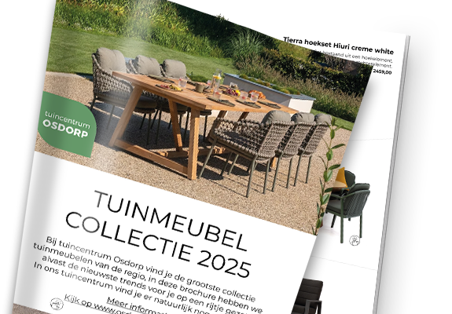

Ben jij op zoek naar een mooie loungeset, tuintafel of ander meubel voor in je tuin of op je balkon?
Met meer dan 250 verschillende tuinmeubelen, waaronder loungesets, diningsets, tuintafels,
tuinstoelen en parasols vind je altijd wel iets wat aansluit bij jouw wensen en smaak.
Kom eens langs bij tuincentrum Osdorp in Amsterdam of bekijk een deel van ons assortiment hier
online in onze webshop.
Bekijk de nieuwe tuinmeubel collectie folder 2025

Ontdek de laatste trends van bekende merken als Tierra Outdoor, 4 Seasons Outdoor, Trestino, Hartman en
Own Living en maak van jouw tuin of balkon dé plek om te genieten van het buitenleven. Bekijk hem snel
en kom ze uitproberen in onze 3000 m2 grote meubelshowroom!
De mooiste loungesets, tuintafels en tuinstoelen vind je bij tuincentrum Osdorp in Amsterdam!
Maak jouw tuin of balkon klaar voor de zonnige dagen met de beste tuinmeubelen van tuincentrum Osdorp.
Op onze grote tuinmeubel afdeling vind je onder anderen:
Houten, wicker en RVS loungesets.
Houten, wicker en RVS diningsets.
Houten, wicker, aluminium en RVS tuintafels en tuinstoelen.
Losse tuinmeubels, zoals tuinbankjes, ligbedden, bistrosets, tafelhaarden, hockers en krukjes.
In ons tuinmeubel assortiment vind je verschillende stijlen, waaronder moderne, klassieke en landelijke
tuinmeubelen.
Waar kan je de tuinmeubelen van tuincentrum Osdorp allemaal kopen? Tuincentrum Osdorp heeft slechts één
vestiging in Amsterdam,
maar een groot deel van ons tuinmeubel assortiment kan ook online worden
gekocht.
Bekijk onze loungeset elementen, tafelhaarden, tuinkussens en andere
tuinartikelen
online of
kom eens langs in onze
tuinmeubel showroom in Amsterdam. Hier kan je op je gemak komen proefzitten voor je tot een aankoop
overgaat.
Ons tuincentrum in Amsterdam is goed te bereiken vanuit onder andere Haarlem, Zaandam, Amstelveen,
Hoofddorp, Aalsmeer, Diemen en Bloemendaal.
Tuinmeubels van Own Living, Hartman, Platinum en Nesling
Kwaliteit, maar ook prijs zijn belangrijke punten bij het aanschaffen van tuinmeubelen en daar is ons
assortiment dan ook op samengesteld.
Wij bieden tuinmeubelen van bekende merken, zoals Hartman, Platinum (parasols), Nesling (schaduwdoeken)
en Cosi Fire (vuurtafels),
maar ook ons eigen merk Own Living. De tuinmeubelen van Own Living zijn goedkoper dan bijvoorbeeld
Hartman,
maar zijn allemaal zorgvuldig getest op duurzaamheid en comfort!
Hoe moet je tuinmeubelen onderhouden?
Hoe je tuinmeubelen moet onderhouden is afhankelijk van het materiaal. In ons assortiment vind je,
zowel houten, wicker, aluminium als RVS tuinmeubelen. Wicker is gevlochten kunststof met een houtachtige
uitstraling,
dat weinig onderhoud vereist, houten tuinmeubelen moeten regelmatig worden behandeld met bijvoorbeeld
een geschikte tuinmeubel olie
en aluminium of RVS tuinmeubelen hoef je alleen maar goed schoon te maken met groene zeep.
Wil je meer informatie over het onderhouden van je tuinmeubelen dan kun je altijd
contact met ons opnemen.
Naast goed onderhoud is het altijd aan te raden om je tuinmeubelen te beschermen met een
goede tuinmeubelhoes, houten tuinmeubelen mogen echter nooit worden afgedekt!
Tuinmeubels kopen bij tuincentrum Osdorp
Tuinmeubelen kopen doe je dus bij tuincentrum Osdorp. Je vindt ons assortiment tuinmeubels in onze
showroom in Amsterdam, maar je kunt ook online tuinmeubelen kopen via onze webshop. Van goedkope
tuinmeubelen tot luxe modellen, wij hebben het allemaal en uiteraard van uitmuntende kwaliteit! Bekijk
ons assortiment dus direct online of kom langs in ons tuincentrum in Amsterdam
om
tuinmeubelen te kopen.